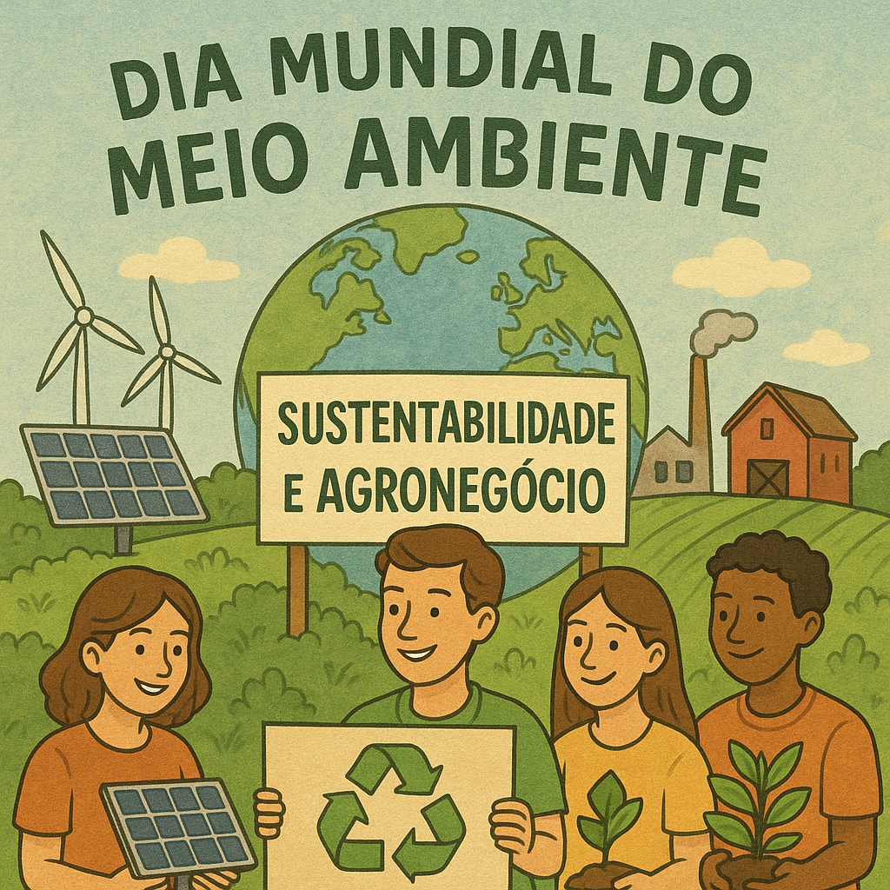

A Conexão Viva entre o Agronegócio e os Objetivos de Desenvolvimento Sustentável
Por Isabelly M. Mota. Publicado
01/08/2025 às 11:52

Embora, à primeira vista, sustentabilidade e agronegócio possam parecer conceitos opostos, na prática, eles se complementam e são indissociáveis. Com base nessa perspectiva, os estudantes do 2º ano do Ensino Médio Técnico em Agronegócio desenvolveram, no componente curricular de Empreendedorismo, uma atividade enriquecedora voltada à temática da sustentabilidade.
Durante a proposta pedagógica, os alunos produziram maquetes e cartazes abordando temas como fontes de energia renovável, o papel das empresas na preservação ambiental, o impacto das atividades econômicas sobre a vida marinha, entre outros assuntos pertinentes à pauta ambiental.
As maquetes representavam diferentes cenários: de um lado, áreas preservadas; de outro, regiões degradadas. Essa dualidade permitiu reflexões aprofundadas sobre os efeitos das ações humanas e empresariais no meio ambiente, bem como sobre as práticas sustentáveis que podem ser adotadas no setor agropecuário.
A atividade não apenas estimulou o pensamento crítico e criativo dos estudantes, como também despertou o interesse da comunidade escolar, atraindo olhares curiosos durante a exposição. “Ao abordar a sustentabilidade, abordamos um tema que nos inclui a todos — afinal, somos diretamente dependentes dos recursos naturais e temos o dever de preservá-los para as futuras gerações. A ação deve ser imediata: o momento de agir é agora”, salientou Isabelly.
A apresentação, realizada durante o horário de aula, na sala, contou com a presença do coordenador do curso técnico em Agronegócio, professor Fernando H. Rivelini e da professora Isadora Campos. Ambos destacaram a importância do trabalho interdisciplinar e da compreensão ampliada sobre o papel das empresas na sustentabilidade. Os estudantes observaram que, por meio de pequenas atitudes e escolhas conscientes, é possível promover impactos positivos duradouros — afinal, somos os protagonistas do futuro.
Entre os exemplos citados pelos grupos, destacam-se:
Minha Casa Solar: projeto governamental que proporciona acesso à energia solar para famílias de baixa renda;
Boticário: com práticas voltadas à reciclagem e reaproveitamento de materiais.
A Terra, com sua riqueza natural e paisagens exuberantes, exige de nós um uso responsável e equilibrado de seus recursos. As ações de um único indivíduo ou organização podem gerar impactos significativos — positivos ou negativos — sobre o meio ambiente.
Educar para a sustentabilidade é, portanto, uma tarefa essencial das instituições de ensino. Sociedades bem informadas e conscientes tendem a prosperar de forma mais justa, ética e sustentável. Como afirmou Sêneca: “Para a ganância, toda a natureza é insuficiente.”
Essa atividade permitiu aos estudantes compreender, de forma prática e reflexiva, como o agronegócio pode — e deve — caminhar de mãos dadas com a sustentabilidade, reforçando o compromisso com um mundo mais equilibrado, onde a consciência ambiental prevaleça sobre a ganância.
**Isabelly M. Mota é estudante do segundo ano do curso Técnico em Agronegócio do Colégio Estadual Cívico-Militar Rosa Delúcia Calsavara de Cambira e foi supervisionada pelo coordenador do Curso, professor Fernando Henrique Rivelini.**